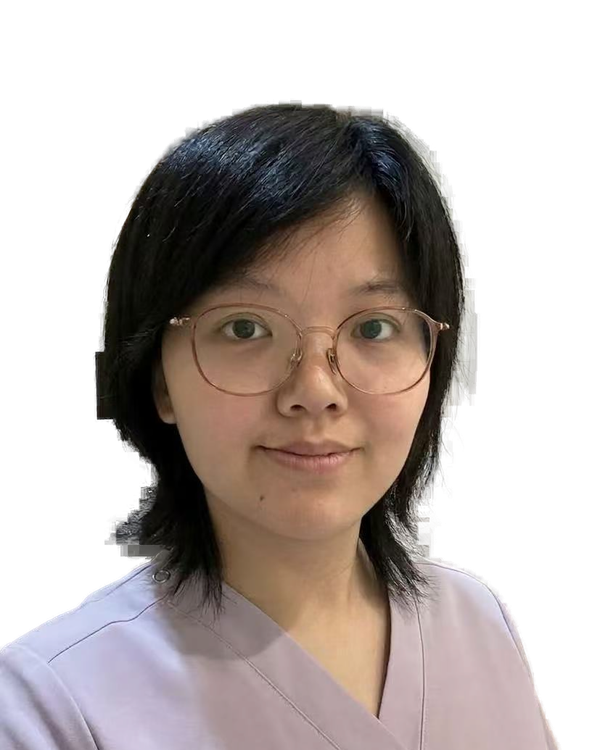

Board Certified Diplomate of Acupuncture (NCCAOM) · Licensed Acupuncturist, New York

I am Ke Miao, a Board Certified Diplomate of Acupuncture (NCCAOM), dually licensed as a Physician in China and as a Licensed Acupuncturist (L.Ac.) in New York (Lic. #007513).
My path began with a philosophy instilled since childhood: Western medicine treats the symptoms; Chinese medicine treats the root. To me, this is not just medical theory — it's a way of seeing the body. Not as something fragile, but as a reservoir of latent strength. Illness, in my view, rarely means the body has been overpowered — it means its own vitality has become momentarily trapped. My work is about helping that dormant self-healing power find its way home.
I trained for eight years in integrated Chinese and Western medicine at Tianjin University of Traditional Chinese Medicine, followed by five years of clinical practice as a physician in China. Since relocating to the U.S. in 2022, I've continued that mission for over two years — bringing more than seven years of combined bicultural clinical experience to every session.
My clinical focus includes chronic pain, menstrual irregularities, perimenopausal hormonal imbalances, digestive issues, weight management, anxiety, insomnia, and post-operative recovery. Beyond the treatment room, I maintain my own practice of Tai Chi, Baduanjin, and meditation to stay attuned to my own flow of Qi, and find quiet joy in nature, aesthetics, and the company of my two cats.
"Dr. Miao exemplifies the qualities of a world-class healthcare professional — compassion, expertise, patience, and an unwavering commitment to her patients."
— T.A., Patient